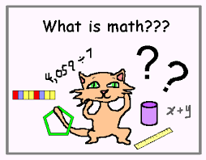

Apa itu matematika?
Secara bahasa Matematika (Indonesia) mathematics (Inggris), athematik (Jerman), mathematique (Perancis), matematico (Itali), matematiceski (Rusia),mathematick atau wiskunde (Belanda) berasal dari bahasa Yunani : mathematikos yaitu ilmu pasti, dari kata mathema atau mathesis yang berarti ajaran, pengetahuan, atau ilmu pengetahuan.Matematika (dari bahasa Yunani: µa??µat??? - mathematiká) adalah studi besaran, struktur, ruang, dan perubahan. Para matematikawan mencari berbagai pola, merumuskan konjektur baru, dan membangun kebenaran melalui metode deduksi yang kaku dari aksioma-aksioma dan definisi-definisi yang bersesuaian.
-
Artimatika
Cabang matematika ini sering kita gunakan dalam kehidupan sehari-hari bahkan orang yang tidak suka matematika. merupakan cabang yang mempelajari operasi dasar bilangan. seperti penjumlahan, pengurangan, perkalian, pembagian, persen, pemangkatan dsb. contoh dalam kehidupan sehari - hari menghitung uang, laba, rugi, bunga bank. Semua hal tentang tambah, kurang, kali, bagi. Cabang Matematika yang paling sering digunakan dalam hidup ini, bahkan oleh orang yang tidak suka Matematika sekalipun
-
Geometri
Geometri (dari bahasa yunani ?e?µet??a; geo = bumi, metria = pengukuran) secara harafiah berarti pengukuran tentang bumcabang matematika membahas tentang bidang, bentuk, ruang, volume, luas. cabang ini banyak di kuasai oleh para insinyur, arsitek Ilmu yang membahas bentuk, bidang, dan ruang suatu benda (terutama luas dan volume). Insinyur dan arsitek yang kompeten pasti menguasai cabang Matematika ini. Bahkan kini geometri sangat diperlukan untuk ilmu desain grafis dan komputer.
-
Aljabar
Aljabar berasal dari Bahasa Arab "al-jabr" yang berarti "pertemuan", "hubungan" atau "penyelesaian" adalah cabang matematika yang dapat dicirikan sebagai generalisasi dari bidang aritmatika. Aljabar juga merupakan nama sebuah struktur aljabar abstrak, yaitu aljabar dalam sebuah bidang. Bentuk-Bentuk seperti 2a , -5b, x3, 3p + 2q disebut bentuk aljabar.Pada bentuk aljabar 2a, 2 disebut koefisien, sedangkan a disebut variable (peubah). Manipulasi operasi arimatika untuk mencari suatu nilai yang tidak diketahui (biasanya dinyatakan dalam variabel x dan y). Ahli komputer dan programming termasuk mereka yang wajib menguasai aljabar. Bahkan ketika kecil, Einstein mulai belajar matematika dari Aljabar ini.
-
Trigonometri
Secara bahasa trigon berarti tiga sudut, metri berarti mengukur, cabang ini membahas tentang sudut segitiga dan fungsi trigometri seperti sinus, cosinus, tangen. contoh dalam kehidupan sehari - hari sistem navigasi satelit, menghitung tinggi pohon (Pramuka). Cabang matematika yang didedikasikan untuk mempelajari semua properti pada segitiga (terutama sudut dan sisi) beserta manipulasinya. Trigonometri juga harus dikuasai oleh para insinyur dan arsitek. Cabang ilmu ini katanya adalah salah satu yang paling sulit dipelajari disekolahan saat ini. Padahal manfaatnya sangatlah besar bagi kehidupan manusia.
-
Kalkulus
Secara bahasa calculus ( bahasa latin) artinya batu kecil untuk menghitung. cabang ilmu matematika yang mencakup limit, turunan, integral, dan deret takterhingga. Kalkulus adalah ilmu mengenai perubahan, sebagaimana geometri adalah ilmu mengenai bentuk dan aljabar adalah ilmu mengenai pengerjaan untuk memecahkan persamaan serta aplikasinya. Kalkulus memiliki aplikasi yang luas dalam bidang-bidang sains, ekonomi, dan teknik; serta dapat memecahkan berbagai masalah yang tidak dapat dipecahkan dengan aljabar elementer. contoh dalam kehidupan sehari-hari kecepatan sesaat, percepatan sesaat. Insinyur & ilmuwan wajib menguasai ini dalam belajar matematika. Ilmu kalkulus mempelajari laju perubahan sesuatu, penjumlahan sesuatu yang banyak sekali menuju suatu nilai pasti, sampai pendekatan yang luar-biasa akurat untuk menghitung sesuatu yang "nyaris" mustahil dipecahkan untuk dihitung menggunakan operasi matematika biasa.
-
Statistik
Cabang ilmu ini mempelajari tentang teknik pengumpulan, pengolahan dan penyajian data. Ilmu ini sangat bermanfaat dalam melakukan penelitian yang melibatkan angka. Bahkan jadi politisi jaman sekarang punperlu belajar dasar ilmu statistik untuk tahu peluang menang dalam pemilihan. Biasanya statistik selalu dikaitkan dengan ilmu hitung peluang.